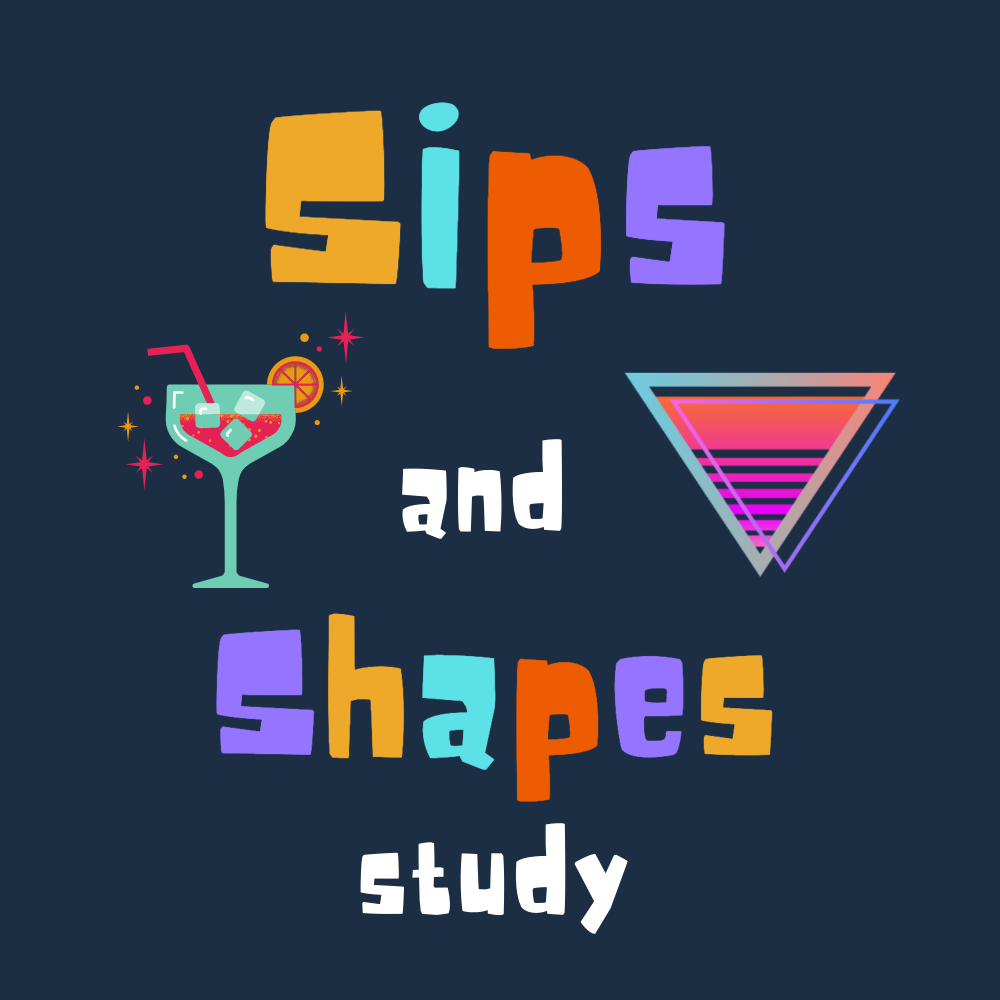
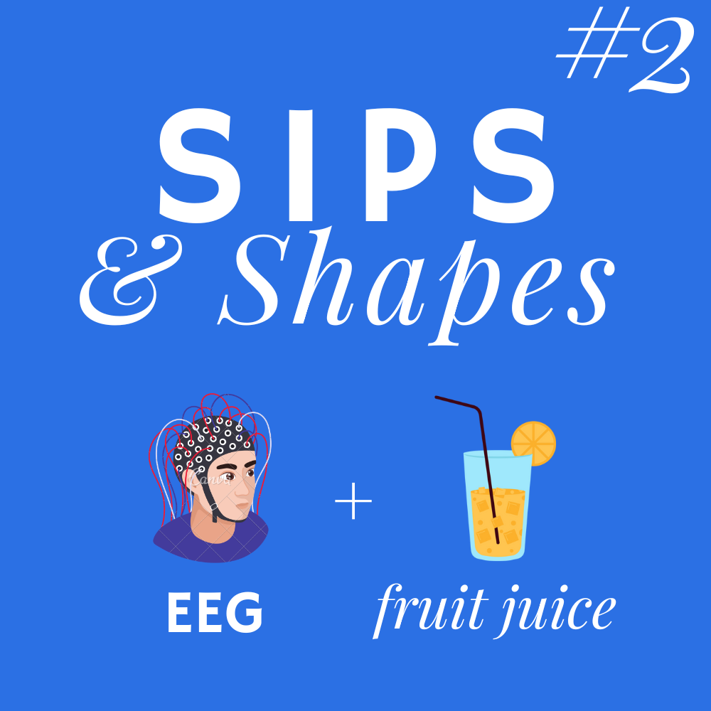

Curious about what we’ve worked on before? This page highlights past studies from our lab that have helped us better understand how the brain supports attention, emotion, and learning & memory. These studies are no longer enrolling new participants. Some are fully completed, while others are in the data analysis phase. We are deeply grateful to everyone who volunteered their time and energy to participate in these studies. Your contributions have been essential to advancing our understanding of the brain and behavior. Science depends on people like you—thank you for being part of the discovery process.

